Based Music
How can we connect local music artists with their community through mobile application?

How can we connect local music artists with their community through mobile application?
Based Music is an upcoming music mobile application that aims to help support local artists by fostering the community relationship between independent artists, passionate listeners, and vibrant venues. The mission is to support local artists by providing a dedicated platform where they can gain exposure, connect with music enthusiasts, and monetize their work through a gamified social music streaming experience.
This is an internship I have done under the company Lasaria. As a product designer, my primary responsibility includes working on UI screens, specifically for the map integration, forget password, and music streaming. I also tackled additional tasks such as creating design components for the design system, leading scrum meetings and updating the product requirement document.
As we're working in an agile project management format, we would have daily scrum meetings along with product meetings within in a smaller group. As a product designer, we're responsible with leading team meetings as well. What worked well for me is writing down meeting notes and share it with the team. It helps keep everyone on the same page.
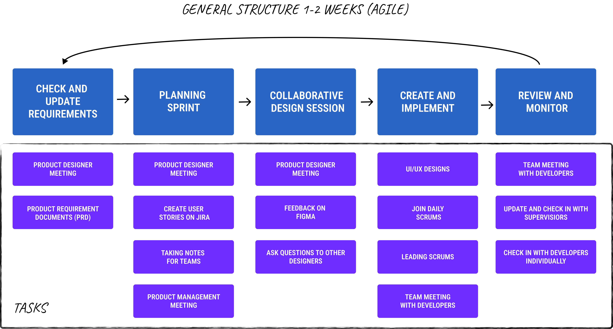
During the start of the internship, a few interations of the design that were already completed. As a team, there were some flaws that we've discovered throughout meetings
The components of the design system are limited. Although many of the parts are easy to understand and use, it doesn't cover many design scenarios we wanted to cover throughout the screens.
There wasn't a proper flow among many of the screens. During a stakeholder presentation, we also determined that having an error user flow would also be beneficial for the engineers to ensure consistency.
We have added requirements and streamlined the old version of the document, which lead to needing more mobile screen such as gamification, certain interactivity, and much more.
Along with the other designers, I took on specific responsibilities in updating our design system. I focused on completing the error components and input fields, some of which are shown in the images below. While there was an existing design system, we decided to start a new one since many essential components were either missing or lacked consistency. This new system improves communication not only among our design team but also with the engineering teams. While it did technical constraints some creativity aspects of the design in some cases, the technical constraints are more met.
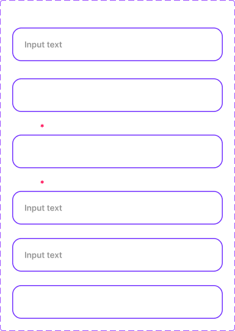


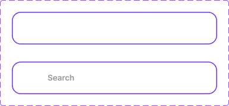

Map integration is my primary responsibility during the internship as the sole product designer. As the launch city are in the DMV and New York City, I decided making my prototypes in New York City as I am most familiar with the area to communicate with the team. Based on the stakeholder expectations and the technical constricts, we decided to design three specific layers:
For the map, I have done a total of 6 iterations. Within the first few iterations, I have faced a few challenges. For instance, we are utilizing Mapbox for prototyping, hence was hard to only use Figma in order to edit into the color that fits our design system without the access to coding, but at the same time, wanting to clearly communicate it to the engineers. To help with the issue, I edited the color of the map through Adobe Phototype and imported it into Figma instead.
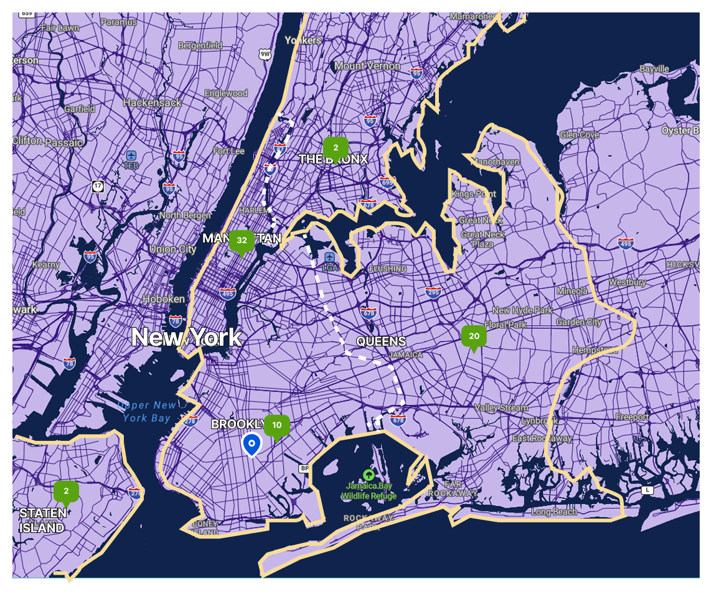
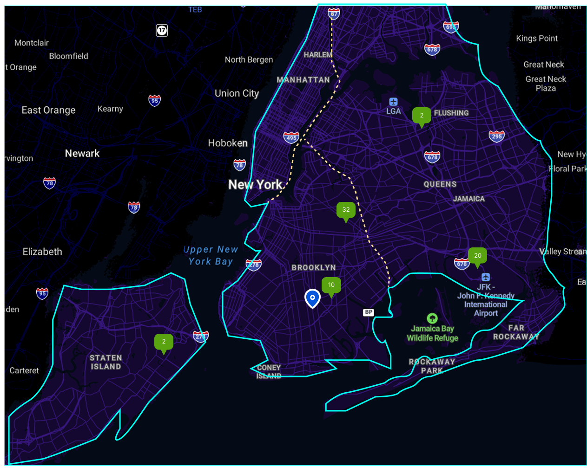
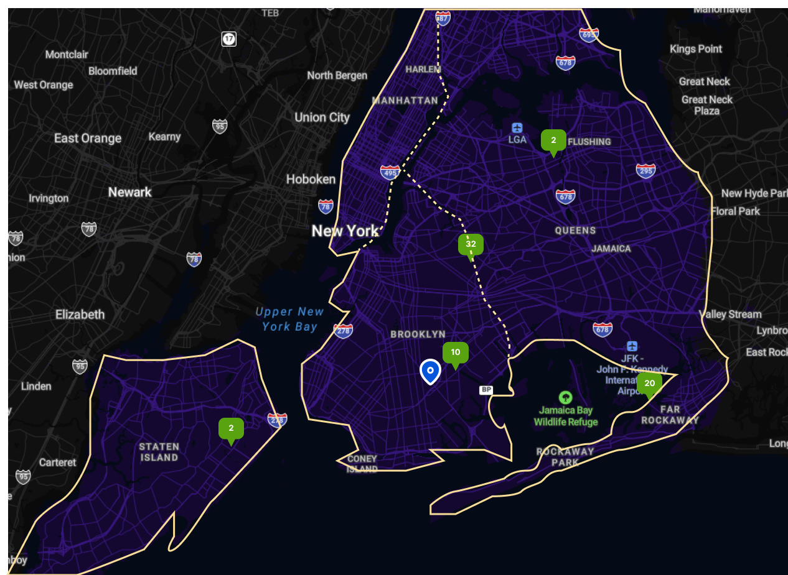
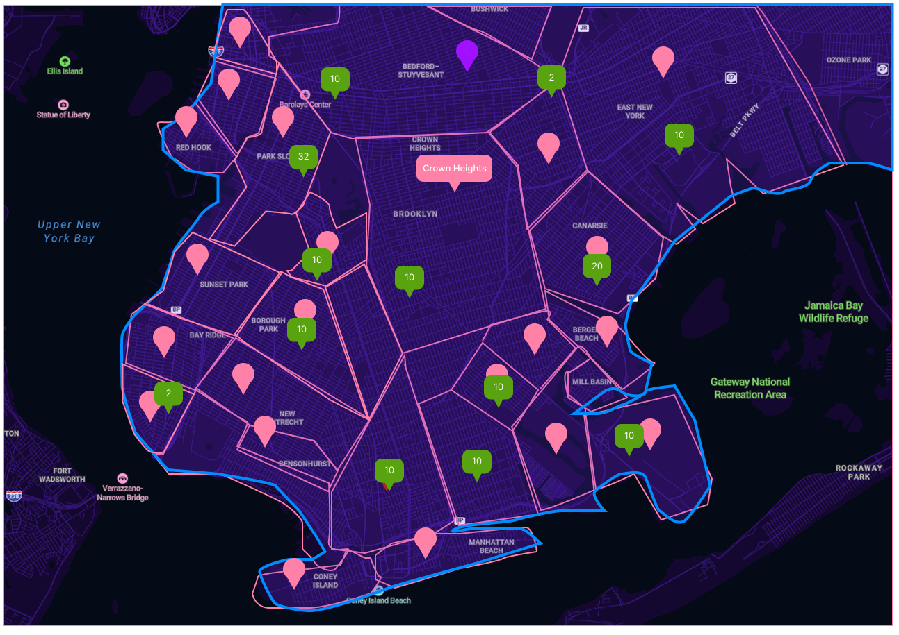
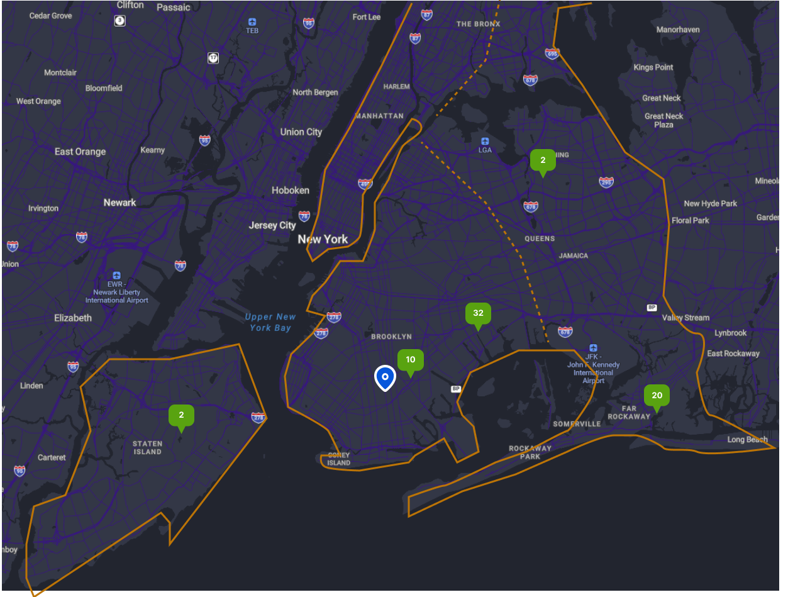
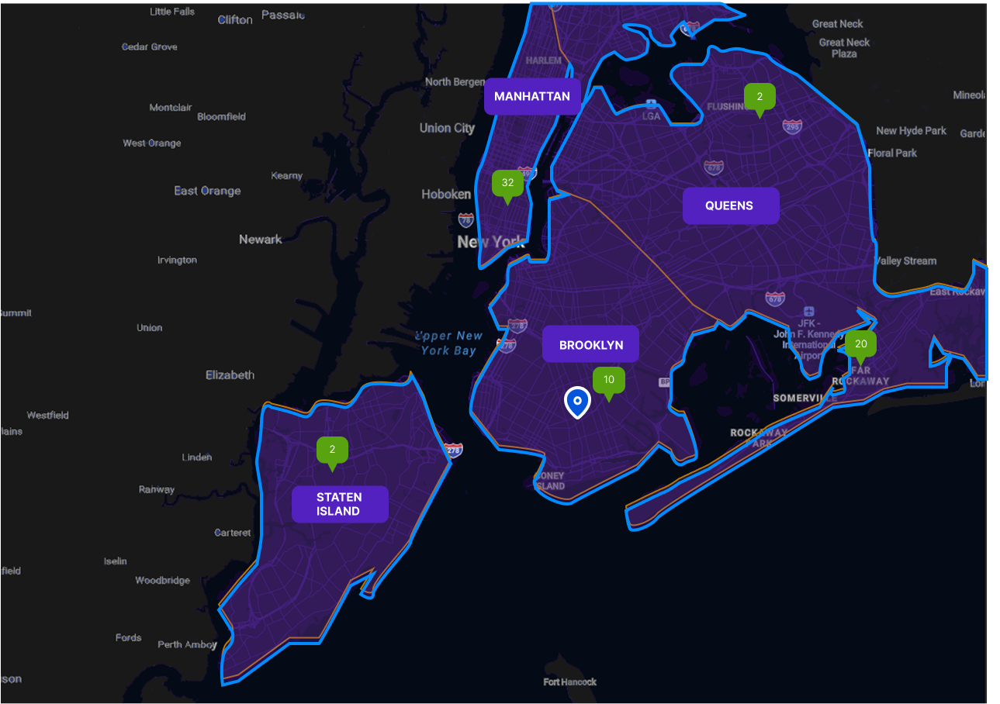
As a team, we have decided that this is the best approach. It fits the stakeholder's expectations to stand out and interactive, while incorporating some accessibility features. The picture below is the final iteration, with the layer 1 and layer 3 created as well. To make sure the map makes sense, I also added notes on the side with the color palette to indicate which is what.

In terms of the filter features, I first made the wireframes to discuss in the product meeting, making sure that the team is on the same page.
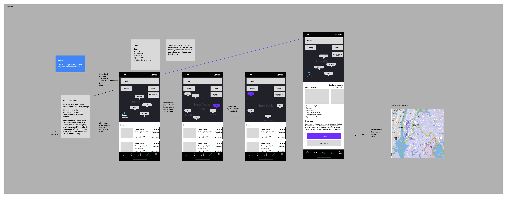
I created each screen to demonstrate what each of the filter screen would look like when click, and how it would be displayed. I have looked like many apps as references, such as Google Map, Zillow, Doordash map etc.


Since navigating around areas might be difficult for users, especially those who wants to look at different states, I decided to add a location filter to allow user to know where the app can be utilized. Within a product meeting, I mentioned that as the app expanded to more states or within the globe scene, it would be good to add an alphabetical quick jump as it can get exhausting scrolling through.
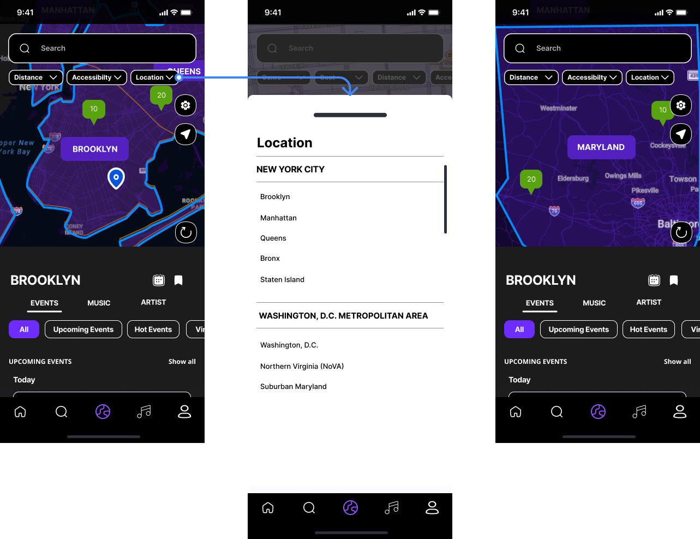
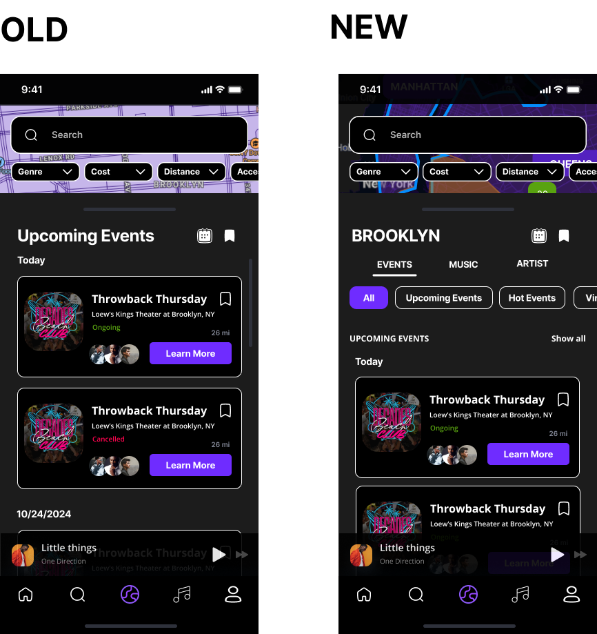
During one of the product meetings, the initial design I have focuses too much on just the event alone. Based on our product requirement, the interactive map should also be utilized to help with music and artist to stay with our mission. Hence, I added two additional features in the bottom sheet: music tab and artist tab. The music tab is used to discover trending and top artists in the selected area. Similarly, the artist tab allows user to find local and trending artist in the selected area.
I did initially bring up the concern about nested tabs as it is often discouraged in UI design due to navigation error, but we didn't have a chance to do usability test within our current timeframe.
Another UI screens and user flow that I have done is the forget password screens. For this section, I tried aiming for a more simplistic approach due to accessibilities, especially when getting started. Through this screen, having error state flow included, it was seen to be really helpful as well.
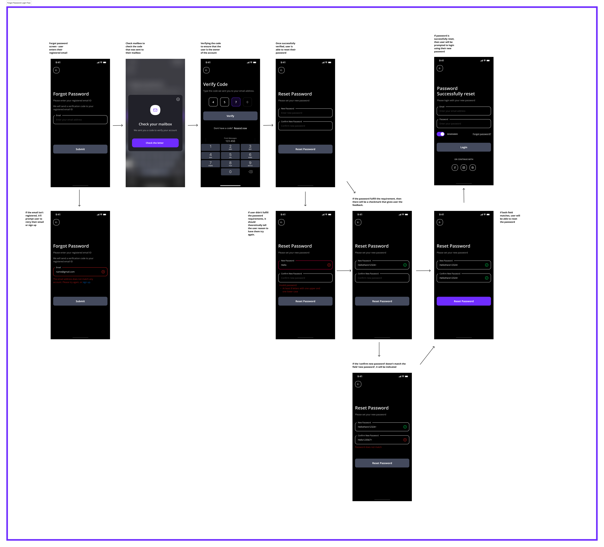
The music streaming prototypes involve the navigations of user will be able to play different music throughout the albums and artists.

The Based Music team were able to
I find that writing the navigations down before doing the wireframes can be extremely helpful for not getting lost. It is also very helpful for engineers and stakeholders if they were confused how it would work as the product are coming together.
Finding a middle ground between expectations of designers, developers, supervisors, stakeholders and product managers are important to ensure that the product aligns with the goals.
Organization is especially important since every member have different work schedule. Keeping scrum notes, making sure the board is well managed, and update everyone through meeting notes has been helpful.
Throughout the internship, I had a lot of success but I also made a lot of mistakes along the way. I learned and took accountability of these mistakes.